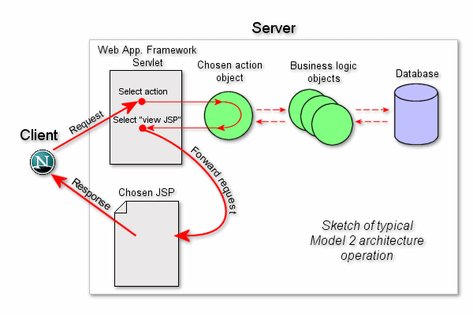

In a fundamental sense, using FreeMarker in the web application
space is no different from anywhere else; FreeMarker writes its output
to a Writer that you pass to the
Template.process method, and it does not care if
that Writer prints to the console or to a file or
to the output stream of HttpServletResponse.
FreeMarker knows nothing about servlets and Web; it just merges Java
object with template files and generates text output from them. From
here, it is up to you how to build a Web application around
this.
But, probably you want to use FreeMarker with some already existing Web application framework. Many frameworks rely on the "Model 2" architecture, where JSP pages handle presentation. If you use such a framework (for example, Apache Struts), then read on. For other frameworks please refer to the documentation of the framework.
Using FreeMarker for "Model 2"
Many frameworks follow the strategy that the HTTP request is
dispatched to user-defined "action" classes that put
data into ServletContext,
HttpSession and
HttpServletRequest objects as attributes, and
then the request is forwarded by the framework to a JSP page (the
view) that will generate the HTML page using the data sent with the
attributes. This is often referred as Model 2.

With these frameworks you can simply use FTL files instead of JSP files. But, since your servlet container (Web application server), unlike with JSP files, does not know out-of-the-box what to do with FTL files, a little extra configuring is needed for your Web application:
-
Copy
freemarker.jar(from thelibdirectory of the FreeMarker distribution) into theWEB-INF/libdirectory of your Web application. -
Insert the following section to the
WEB-INF/web.xmlfile of your Web application (and adjust it if required):
<servlet>
<servlet-name>freemarker</servlet-name>
<servlet-class>freemarker.ext.servlet.FreemarkerServlet</servlet-class>
<!--
Init-param documentation:
https://freemarker.apache.org/docs/api/freemarker/ext/servlet/FreemarkerServlet.html
-->
<!-- FreemarkerServlet settings: -->
<init-param>
<param-name>TemplatePath</param-name>
<param-value>/</param-value>
</init-param>
<init-param>
<param-name>NoCache</param-name>
<param-value>true</param-value>
</init-param>
<init-param>
<param-name>ResponseCharacterEncoding</param-name>
<!-- Use the output_encoding setting of FreeMarker: -->
<param-value>fromTemplate</param-value>
</init-param>
<init-param>
<param-name>ExceptionOnMissingTemplate</param-name>
<!-- true => HTTP 500 on missing template, instead of HTTP 404. -->
<param-value>true</param-value>
</init-param>
<!-- FreeMarker engine settings: -->
<init-param>
<param-name>incompatible_improvements</param-name>
<param-value>2.3.27</param-value>
<!--
Recommended to set to a high value.
See: https://freemarker.apache.org/docs/pgui_config_incompatible_improvements.html
-->
</init-param>
<init-param>
<param-name>template_exception_handler</param-name>
<!-- Use "html_debug" during development! -->
<param-value>rethrow</param-value>
</init-param>
<init-param>
<param-name>template_update_delay</param-name>
<!-- Use 0 during development! Consider what value you need otherwise. -->
<param-value>30 s</param-value>
</init-param>
<init-param>
<param-name>default_encoding</param-name>
<!-- The encoding of the template files: -->
<param-value>UTF-8</param-value>
</init-param>
<init-param>
<param-name>output_encoding</param-name>
<!-- The encoding of the template output; Note that you must set
"ResponseCharacterEncodring" to "fromTemplate" for this to work! -->
<param-value>UTF-8</param-value>
</init-param>
<init-param>
<param-name>locale</param-name>
<!-- Influences number and date/time formatting, etc. -->
<param-value>en_US</param-value>
</init-param>
<init-param>
<param-name>number_format</param-name>
<param-value>0.##########</param-value>
</init-param>
<load-on-startup>1</load-on-startup>
</servlet>
<servlet-mapping>
<servlet-name>freemarker</servlet-name>
<url-pattern>*.ftl</url-pattern>
<!-- HTML and XML auto-escaped if incompatible_improvements >= 2.3.24: -->
<url-pattern>*.ftlh</url-pattern>
<url-pattern>*.ftlx</url-pattern>
</servlet-mapping>
...
<!--
Prevent the visiting of MVC Views from outside the servlet container.
RequestDispatcher.forward/include should, and will still work.
Removing this may open security holes!
-->
<security-constraint>
<web-resource-collection>
<web-resource-name>FreeMarker MVC Views</web-resource-name>
<url-pattern>*.ftl</url-pattern>
<url-pattern>*.ftlh</url-pattern>
<url-pattern>*.ftlx</url-pattern>
</web-resource-collection>
<auth-constraint>
<!-- Nobody is allowed to visit these directly. -->
</auth-constraint>
</security-constraint> After this, you can use FTL files (*.ftl)
in the same manner as JSP (*.jsp) files. (Of
course you can choose another extension besides
ftl; it is just the convention)
How does it work? Let's examine how JSP-s work. Many servlet
container handles JSP-s with a servlet that is mapped to the
*.jsp request URL pattern. That servlet will
receive all requests where the request URL ends with
.jsp, find the JSP file based on the request
URL, and internally compiles it to a Servlet,
and then call the generated servlet to generate the page. The
FreemarkerServlet mapped here to the
*.ftl URL pattern does the same, except that
FTL files are not compiled to Servlet-s, but to
Template objects, and then the
process method of Template
will be called to generate the page.
For example, instead of this JSP file (note that it heavily uses Struts tag-libs to save designers from embedded Java monsters):
<%@ taglib uri="/WEB-INF/struts-bean.tld" prefix="bean" %>
<%@ taglib uri="/WEB-INF/struts-logic.tld" prefix="logic" %>
<html>
<head><title>Acmee Products International</title>
<body>
<h1>Hello <bean:write name="user"/>!</h1>
<p>These are our latest offers:
<ul>
<logic:iterate name="latestProducts" id="prod">
<li><bean:write name="prod" property="name"/>
for <bean:write name="prod" property="price"/> Credits.
</logic:iterate>
</ul>
</body>
</html> you can use this FTL file (use ftl file
extension instead of jsp):
<html>
<head><title>Acmee Products International</title>
<body>
<h1>Hello ${user}!</h1>
<p>These are our latest offers:
<ul>
<#list latestProducts as prod>
<li>${prod.name} for ${prod.price} Credits.
</#list>
</ul>
</body>
</html> In FreeMarker <html:form
action="/query">...</html:form>
is just static text, so it is printed to the output as is, like
any other XML or HTML markup. JSP tags are just FreeMarker
directives, nothing special, so you use FreeMarker
syntax for calling them, not JSP syntax:
<@html.form
action="/query">...</@html.form>.
Note that in the FreeMarker syntax you don't use
${...} in
parameters as in JSP, and you don't quote the
parameter values. So this is
WRONG:
<#-- WRONG: -->
<@my.jspTag color="${aVariable}" name="aStringLiteral"
width="100" height=${a+b} /> and this is good:
<#-- Good: -->
<@my.jspTag color=aVariable name="aStringLiteral"
width=100 height=a+b /> In both templates, when you refer to user
and latestProduct, it will first try to find a
variable with that name that was created in the template (like
prod; if you master JSP: a page scope attribute).
If that fails, it will try to look up an attribute with that name in
the HttpServletRequest, and if it is not there
then in the HttpSession, and if it still doesn't
find it then in the ServletContext. In the case
of FTL this works because FreemarkerServlet
builds the data-model from the attributes of the mentioned 3
objects. That is, in this case the root hash is not a
java.util.Map (as it was in some example codes in
this manual), but
ServletContext+HttpSession+HttpServletRequest;
FreeMarker is pretty flexible about what the data-model is. So if
you want to put variable "name" into the
data-model, then you call
servletRequest.setAttribute("name", "Fred"); this
is the logic of Model 2, and FreeMarker adapts itself to it.
FreemarkerServlet also puts 3 hashes into
the data-model, by which you can access the attributes of the 3
objects directly. The hash variables are:
Request, Session,
Application (corresponds to
ServletContext). It also exposes another hash
named RequestParameters that provides access to
the parameters of the HTTP request.
FreemarkerServlet has various init-params.
It can be set up to load templates from an arbitrary directory, from
the classpath, or relative to the Web application directory. You can
set the charset used for templates, the default locale used by
templates, what object wrapper do you want to use, etc.
FreemarkerServlet is easily tailored to
special needs through subclassing. Say, if you need to have
additional variables available in your data-model for all templates,
subclass the servlet and override the
preTemplateProcess() method to shove any
additional data you need into the model before the template gets
processed. Or subclass the servlet, and set these globally available
variables as shared
variables in the Configuration.
For more information please read the Java API documentation of the class.
Including content from other web application resources
You can use the <@include_page
path="..."/> custom directive provided by the
FreemarkerServlet (since 2.3.15) to include the
contents of another web application resource into the output; this
is often useful to integrate output of JSP pages (living alongside
the FreeMarker templates in the same web server) into the FreeMarker
template output. Using:
<@include_page path="path/to/some.jsp"/>
is identical to using this tag in JSP:
<jsp:include page="path/to/some.jsp">
<@include_page ...> is not to be
confused with <#include ...>, as the last
is for including FreeMarker templates without involving the
Servlet container. An <#include ...>-ed
template shares the template processing state with the including
template, such as the data-model and the template-language
variables, while <@include_page ...>
starts an independent HTTP request processing.
Some Web Application Frameworks provide their own solution
for this, in which case you possibly should use that instead. Also
some Web Application Frameworks don't use
FreemarkerServlet, so
include_page is not available.
The path can be relative or absolute. Relative paths are
interpreted relative to the URL of the current HTTP request (one
that triggered the template processing), while absolute paths are
absolute in the current servlet context (current web application).
You can not include pages from outside the current web application.
Note that you can include any page, not just a JSP page; we just
used page with path ending in .jsp as an
illustration.
In addition to the path parameter, you can
also specify an optional parameter named
inherit_params with a boolean value (defaults to
true when not specified) that specifies whether the included page
will see the HTTP request parameters of the current request or
not.
Finally, you can specify an optional parameter named
params that specifies new request parameters that
the included page will see. In case inherited parameters are passed
too, the values of specified parameters will get prepended to the
values of inherited parameters of the same name. The value of
params must be a hash, with each value in it
being either a string, or a sequence of strings (if you need
multivalued parameters). Here's a full example:
<@include_page path="path/to/some.jsp" inherit_params=true params={"foo": "99", "bar": ["a", "b"]}/> This will include the page
path/to/some.jsp, pass it all request parameters
of the current request, except for "foo" and "bar", which will be
set to "99" and multi-value of "a", "b", respectively. In case the
original request already had values for these parameters, the new
values will be prepended to the existing values. I.e. if "foo" had
values "111" and "123", then it will now have values "99", "111",
"123".
It is in fact possible to pass
non-string values for parameter values within
params. Such a value will be converted to a
suitable Java object first (i.e. a Number, a Boolean, a Date, etc.),
and then its Java toString() method will be used
to obtain the string value. It is better to not rely on this
mechanism, though, and instead explicitly ensure that parameter
values that aren't strings are converted to strings on the template
level where you have control over formatting using the
?string and ?c built-ins.
Using JSP custom tags in FTL
FreemarkerServlet puts the
JspTaglibs hash into the data-model, which you
can use to access JSP taglibs. The JSP custom tags will be
accessible as plain user-defined directives, and the custom EL
functions (since FreeMarker 2.3.22) as methods. For example, for
this JSP file:
<%@ page contentType="text/html;charset=ISO-8859-2" language="java"%>
<%@ taglib prefix="e" uri="/WEB-INF/example.tld" %>
<%@ taglib prefix="oe" uri="/WEB-INF/other-example.tld" %>
<%@ taglib prefix="c" uri="http://java.sun.com/jsp/jstl/core" %>
<%@ taglib prefix="fn" uri="http://java.sun.com/jsp/jstl/functions" %>
<%-- Custom JSP tags and functions: --%>
<e:someTag numParam="123" boolParam="true" strParam="Example" anotherParam="${someVar}">
...
</e:someTag>
<oe:otherTag />
${e:someELFunction(1, 2)}
<%-- JSTL: --%>
<c:if test="${foo}">
Do this
</c:if>
<c:choose>
<c:when test="${x == 1}">
Do this
</c:when>
<c:otherwise>
Do that
</c:otherwise>
</c:choose>
<c:forEach var="person" items="${persons}">
${person.name}
</c:forEach>
${fn:trim(bar)} the about equivalent FTL is:
<#assign e=JspTaglibs["/WEB-INF/example.tld"]>
<#assign oe=JspTaglibs["/WEB-INF/other-example.tld"]>
<#-- Custom JSP tags and functions: --#>
<@e.someTag numParam=123 boolParam=true strParam="Example" anotherParam=someVar>
...
</@e.someTag>
<@oe.otherTag />
${e.someELFunction(1, 2)}
<#-- JSTL - Instead, use native FTL constructs: -->
<#if foo>
Do this
</#if>
<#if x == 1>
Do this
<#else>
Do that
</#if>
<#list persons as person>
${person.name}
</#list>
${bar?trim} Parameter values don't use quotation and
"${...}" like in
JSP. See more explanation later.
JspTaglibs is not a core FreeMarker
feature; it only exists when the template is called through the
FreemarkerServlet. That's because JSP
tags/functions assume a servlet environment (FreeMarker doesn't),
plus some Servlet concepts have to be emulated in the special
FreeMarker data-model that FreemarkerServlet
builds. Many modern frameworks use FreeMarker on a pure way, not
through FreemarkerServlet.
Since JSP custom tags are written to operate in JSP
environment, they assume that variables (often referred as
"beans" in JSP world) are stored in 4 scopes: page
scope, request scope, session scope and application scope. FTL has
no such notation (the 4 scopes), but
FreemarkerServlet provides emulated JSP
environment for the custom JSP tags, which maintains correspondence
between the "beans" of JSP scopes and FTL variables.
For the custom JSP tags, the request, session and application scopes
are exactly the same as with real JSP: the attributes of the
javax.servlet.ServletContext,
HttpSession and ServletRequest
objects. From the FTL side you see these 3 scopes together as the
data-model, as it was explained earlier. The page scope corresponds
to the FTL global variables (see the global
directive). That is, if you create a variable with the
global directive, it will be visible for the
custom tags as page scope variable through the emulated JSP
environment. Also, if a JSP-tag creates a new page scope variable,
the result will be the same as if you create a variable with the
global directive. Note that the variables in the
data-model are not visible as page-scope attributes for the JSP
tags, despite that they are globally visible, since the data-model
corresponds to the request, session and application scopes, not the
page-scope.
On JSP pages you quote all attribute values, it does not mater
if the type of the parameter is string or boolean or number. But
since custom tags are accessible in FTL templates as user-defined
FTL directives, you have to use the FTL syntax rules inside the
custom tags, not the JSP rules. So when you specify the value of an
"attribute", then on the right side of the
= there is an FTL expression. Thus,
you must not quote boolean and numerical parameter
values (e.g. <@tiles.insert
page="/layout.ftl" flush=true/>), or they are
interpreted as string values, and this will cause a type mismatch
error when FreeMarker tries to pass the value to the custom tag that
expects non-string value. Also note that, naturally, you can use any
FTL expression as attribute value, such as variables, calculated
values, etc. (e.g. <@tiles.insert page=layoutName
flush=foo && bar/>).
FreeMarker does not rely on the JSP support of the servlet
container in which it is run when it uses JSP taglibs since it
implements its own lightweight JSP runtime environment. There is
only one small detail to pay attention to: to enable the FreeMarker
JSP runtime environment to dispatch events to JSP taglibs that
register event listeners in their TLD files, you should add this to
the WEB-INF/web.xml of your Web
application:
<listener> <listener-class>freemarker.ext.jsp.EventForwarding</listener-class> </listener>
Note that you can use JSP taglibs with FreeMarker even if the
servlet container has no native JSP support, just make sure that the
javax.servlet.jsp.* packages for JSP 2.0 (or
later) are available to your Web application.
As of this writing, JSP features up to JSP 2.1 are implemented, except the "tag files" feature of JSP 2 (i.e., custom JSP tags implemented in JSP language). The tag files had to be compiled to Java classes to be usable under FreeMarker.
JspTaglibs[uri]
will have to find the TLD for the URI specified, just like JSP's
@taglib directive has to. For this, it implements
the TLD discovery mechanism described in the JSP specification. See
more there, but in a nutshell, it searches TLD-s in
WEB-INF/web.xml taglib
elements, at WEB-INF/**/*.tld, and in
WEB-INF/lib/*.{jar,zip}/META-INF/**/*.tld.
Additionally, it can discover TLD-s that are visible for the class
loader even if they are outside the WAR structure, when you set that
up with the MetaInfTldSources and/or
ClasspathTlds
FreemarkerServlet init-params (since 2.3.22). See
the Java API documentation of FreemarkerServlet
for the description of these. It's also possible to set these from
Java system properties, which can be handy when you want to change
these in the Eclipse run configuration without modifying the
web.xml; again, see the
FreemarkerServlet API docs.
FreemarkerServlet also recognizes the
org.eclipse.jetty.server.webapp.ContainerIncludeJarPattern
servlet context attribute, and adds the entries from it to
MetaInfTldSources.
Embed FTL into JSP pages
There is a taglib that allows you to put FTL fragments into JSP pages. The embedded FTL fragment can access the attributes (Beans) of the 4 JSP scopes. You can find a working example and the taglib in the FreeMarker distribution.